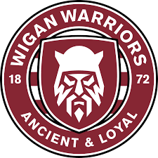

★ Featured

Wigan Warriors
Wigan, Greater Manchester
The most decorated club in rugby league history with 21 league championships, playing at the DW Stadium.
View Profile
Search all 101 rugby league clubs below by name or town. Most of the amateur clubs, where new players start, are in the North of England. Looking for how the competitions work? Read our guide to rugby leagues in the UK.
101 clubs found
Rugby league clubs are concentrated in West Yorkshire, Greater Manchester, Merseyside, Cheshire, Hull and west Cumbria, with a smaller cluster of rugby league clubs in London. Search this page by your town, or open the area page for your city. Pick an amateur club (usually named ARLFC), contact it through its profile and ask about the next training night.

| Area | Example rugby league clubs in our directory | Area page |
|---|---|---|
| Leeds and West Yorkshire | Leeds Rhinos, Siddal, East Leeds | Leeds rugby clubs |
| Hull | Hull FC, Hull KR, West Hull | Hull rugby teams |
| Wigan, Leigh and Salford | Wigan Warriors, Leigh Leopards, Wigan St Judes | Manchester rugby clubs |
| St Helens | St Helens, Thatto Heath Crusaders | Merseyside |
| Warrington and Widnes | Warrington Wolves, Widnes Vikings | Cheshire |
| West Cumbria | Whitehaven, Workington Town | Cumbria |
| London | London Broncos, London Skolars | Rugby clubs in London |
English rugby league has three main layers. Super League has 14 professional clubs in 2026, and the 20-club Championship sits below it. Under those is the community game, led by the National Community Rugby League (NCRL) and regional men's leagues. Entry to Super League is decided by club grading and an independent panel, not results alone.
| Level | Competition (2026) | Clubs |
|---|---|---|
| 1 | Super League | 14 |
| 2 | RFL Championship (merged with League One) | 20 |
| 3 | NCRL National Premier League | 12 |
| 4 | NCRL National League One | 12 |
| 5+ | NCRL National Conferences and regional men's leagues | Many |
The 12 English Super League clubs are Bradford Bulls, Castleford Tigers, Huddersfield Giants, Hull FC, Hull KR, Leeds Rhinos, Leigh Leopards, St Helens, Wakefield Trinity, Warrington Wolves, Wigan Warriors and York Knights. They are joined by Catalans Dragons and Toulouse Olympique from France. Hull KR won the 2025 Grand Final, their first Super League title. For both codes side by side, see rugby leagues in the UK.
Rugby league clubs in London are led by London Broncos, the capital's professional club in the RFL Championship, and London Skolars, a community club at the New River Stadium in Wood Green. Amateur rugby league clubs in London such as Hammersmith Hills Hoists, London Chargers, South London Silverbacks and Brixton Bulls play in the Southern Conference League, the top of the amateur game outside the North.
Rugby league in England outside the heartlands is growing. Alongside the rugby league clubs in London, our directory lists Cornwall RLFC and Midlands Hurricanes, and the NCRL's National Conference Southern gives amateur clubs across the South a competitive league. If you are in the capital, our rugby clubs in London page lists every union and rugby league club by area.
Amateur rugby league clubs, often called ARLFCs, are the heart of club rugby league in England. They run open-age men's teams, women's and girls' sides, and junior teams from under-7s upwards. The open-age season runs mainly from spring to autumn, the opposite of rugby union, so some players play both codes in the same year.
Rugby league teams in the UK are concentrated in the North of England. Our directory lists 101 rugby league clubs: 96 in England, 2 in Wales and 3 French clubs that play in English competitions. The Rugby Football League (RFL) governs the game in England, and its website is the official source for clubs and competitions.
| Area | Rugby league clubs in our directory |
|---|---|
| West Yorkshire | 36 |
| Greater Manchester | 15 |
| East Yorkshire (Hull) | 10 |
| Merseyside | 9 |
| Cumbria | 8 |
| Cheshire | 6 |
| Rest of the UK (incl. London) | 17 |
There are hundreds of amateur rugby league clubs in England, plus the 14 Super League and 20 Championship clubs. Our directory currently lists 101 rugby league clubs.
Bradford Bulls, Castleford Tigers, Catalans Dragons, Huddersfield Giants, Hull FC, Hull KR, Leeds Rhinos, Leigh Leopards, St Helens, Toulouse Olympique, Wakefield Trinity, Warrington Wolves, Wigan Warriors and York Knights.
Its clubs voted in January 2026 to dissolve it. Its divisions became the National Community Rugby League (NCRL) National Leagues, led by a 12-club National Premier League.
Yes. Amateur clubs welcome newcomers, and tag or touch rugby league is a low-contact way to start. Search this page for a club near you.
London Broncos (RFL Championship) and London Skolars (community club, Wood Green) are the capital's senior rugby league clubs. Amateur rugby league clubs in London include Hammersmith Hills Hoists, London Chargers, South London Silverbacks and Brixton Bulls, who play in the Southern Conference League.
Twelve of the 14 Super League clubs in 2026 are English: Bradford Bulls, Castleford Tigers, Huddersfield Giants, Hull FC, Hull KR, Leeds Rhinos, Leigh Leopards, St Helens, Wakefield Trinity, Warrington Wolves, Wigan Warriors and York Knights. Below them, the 20-club Championship and hundreds of amateur clubs complete the English game.
Our directory lists 101 rugby league clubs: 96 in England, 2 in Wales and 3 French clubs that play in UK competitions. Many amateur clubs run several teams, so the number of rugby league teams in the UK is much higher.